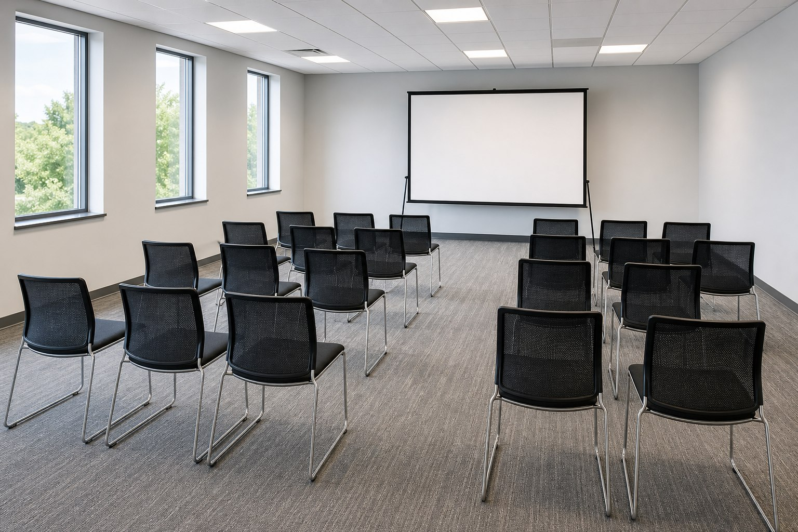

Directions: For each question, you will listen to four short statements about a photograph. Select the statement that best describes what is happening in the picture.
Question 1
听 4 句陈述，选出最符合照片的一句（只读一遍）
1.Choose the statement that best describes the photograph.
AA worker is measuring the width of a window frame.
BSome curtains are being hung.
CThe glass is being cleaned.
DThe window frame is being painted.
录音原文 / 参考描述
照片内容：一名工作人員正在測量窗框的寬度。
A:A worker is measuring the width of a window frame.
B:Some curtains are being hung.
C:The glass is being cleaned.
D:The window frame is being painted.
解析 / Explanation
A. 工作人員將捲尺水平拉過窗框，正在量測寬度。畫面中沒有窗簾、清潔工具或油漆刷。
Question 2

听 4 句陈述，选出最符合照片的一句（只读一遍）
2.Choose the statement that best describes the photograph.
AThe chairs have been stacked beside the wall.
BSeveral people are watching a presentation.
CTables are arranged around the edge of the room.
DRows of chairs are facing a presentation screen.
录音原文 / 参考描述
照片内容：一排排椅子面向簡報幕。
A:The chairs have been stacked beside the wall.
B:Several people are watching a presentation.
C:Tables are arranged around the edge of the room.
D:Rows of chairs are facing a presentation screen.
解析 / Explanation
D. 空教室中的椅子分列成數排，全部朝向前方的簡報幕。椅子沒有堆疊，現場也沒有人或桌子。
Question 3
听 4 句陈述，选出最符合照片的一句（只读一遍）
3.Choose the statement that best describes the photograph.
ASome sheets are being fed into an automatic document feeder.
BThe machine is being wheeled away from the wall.
CAn office machine is being operated using a touch screen.
DA drawer beneath the control panel is being pulled open.
录音原文 / 参考描述
照片内容：一台办公设备正通过触摸屏操作。
A:Some sheets are being fed into an automatic document feeder.
B:The machine is being wheeled away from the wall.
C:An office machine is being operated using a touch screen.
D:A drawer beneath the control panel is being pulled open.
解析 / Explanation
C. 男子的手指正触碰机器的控制屏。纸盒并未拉开，也没有送纸或移动机器的动作；后三项用常见办公动作作为干扰。此题为基于原许可图片的改编。
Question 4
听 4 句陈述，选出最符合照片的一句（只读一遍）
4.Choose the statement that best describes the photograph.
AThe windshield is being washed.
BA mechanic is replacing a tire.
CSome boxes are being unloaded from the trunk.
DA charging cable is being connected to a vehicle.
录音原文 / 参考描述
照片内容：一條充電線正被接上車輛。
A:The windshield is being washed.
B:A mechanic is replacing a tire.
C:Some boxes are being unloaded from the trunk.
D:A charging cable is being connected to a vehicle.
解析 / Explanation
D. 男子正把充電接頭插入車身後側的充電口。畫面中沒有清洗擋風玻璃、更換輪胎或從行李廂卸貨。
Question 5
听 4 句陈述，选出最符合照片的一句（只读一遍）
5.Choose the statement that best describes the photograph.
ATwo commuters are comparing transit maps.
BPassengers are boarding a train.
CA traveler is buying a ticket from a machine.
DThe transit shelter is completely empty.
录音原文 / 参考描述
照片内容：兩名通勤者正在比較交通路線圖。
A:Two commuters are comparing transit maps.
B:Passengers are boarding a train.
C:A traveler is buying a ticket from a machine.
D:The transit shelter is completely empty.
解析 / Explanation
A. 兩名通勤者手持紙本路線圖，旁邊也有大型路線圖，顯示他們正在比對交通資訊；畫面沒有列車或售票機。
Question 6
听 4 句陈述，选出最符合照片的一句（只读一遍）
6.Choose the statement that best describes the photograph.
AA worker is adjusting a wall-mounted thermostat.
BA picture is being hung in a hallway.
CThe wall is being painted.
DSome wiring is being removed from the ceiling.
录音原文 / 参考描述
照片内容：一名工作人員正在調整壁掛式恆溫器。
A:A worker is adjusting a wall-mounted thermostat.
B:A picture is being hung in a hallway.
C:The wall is being painted.
D:Some wiring is being removed from the ceiling.
解析 / Explanation
A. 工作人員伸手按下牆上的恆溫器控制面板。畫面沒有掛畫、油漆或拆除天花板線路。
PART 2 — Question-Response（7–31）
Directions: You will hear a question or statement followed by three responses. Select the best response to the question or statement.
Question 7
听一句问话/陈述 + 三个回应，选出最恰当的回答
7.Select the best response.
ABecause the encryption test took longer than expected.
BThe new badge scanner is beside the entrance.
CI can reserve a larger room.
录音原文 / Transcript（问句 + 三个回应）
Why was the mobile-login launch delayed?
Because the encryption test took longer than expected.
The new badge scanner is beside the entrance.
I can reserve a larger room.
解析 / Explanation
A. Why was the launch delayed? 要回答原因，encryption test took longer 是原因句。
Question 8
听一句问话/陈述 + 三个回应，选出最恰当的回答
8.Select the best response.
AI think Mr. Alvarez has the latest figures.
BOnly two boxes were delivered.
CThe cafeteria closes at seven.
录音原文 / Transcript（问句 + 三个回应）
Who has the latest revenue figures for the investor briefing?
I think Mr. Alvarez has the latest figures.
Only two boxes were delivered.
The cafeteria closes at seven.
解析 / Explanation
A. Who has...? 詢問誰有最新數字，I think Mr. Alvarez... 是自然的間接回答。
Question 9
听一句问话/陈述 + 三个回应，选出最恰当的回答
9.Select the best response.
AIt was demonstrated in the lobby.
BLet's wait for the client's reply first.
CThe software license is renewable.
录音原文 / Transcript（问句 + 三个回应）
Should we postpone the software demonstration?
It was demonstrated in the lobby.
Let's wait for the client's reply first.
The software license is renewable.
解析 / Explanation
B. Should we...? 提出決策；先等客戶回覆是保留式、但自然的間接回答。
Question 10
听一句问话/陈述 + 三个回应，选出最恰当的回答
10.Select the best response.
AThe database contains customer records.
BIt was expected by the technical team.
CThen let's notify the evening-shift staff.
录音原文 / Transcript（问句 + 三个回应）
The data migration will take two hours longer than expected.
The database contains customer records.
It was expected by the technical team.
Then let's notify the evening-shift staff.
解析 / Explanation
C. 移轉延長會影響晚班；通知晚班員工是最合理的情境反應。
Question 11
听一句问话/陈述 + 三个回应，选出最恰当的回答
11.Select the best response.
AI can, unless Martin has already volunteered.
BIn the main conference room.
CThe forecast was revised twice.
录音原文 / Transcript（问句 + 三个回应）
Who's taking minutes while Lena presents the quarterly forecast?
I can, unless Martin has already volunteered.
In the main conference room.
The forecast was revised twice.
解析 / Explanation
A. Who's taking minutes 詢問由誰記錄會議內容；I can 直接承接工作，unless 子句補充可能已有志願者。
Question 12
听一句问话/陈述 + 三个回应，选出最恰当的回答
12.Select the best response.
AIt was revised yesterday.
BNot at all. I'll send it right away.
CYes, the schedule changed.
录音原文 / Transcript（问句 + 三个回应）
Would you mind sending me the revised schedule?
It was revised yesterday.
Not at all. I'll send it right away.
Yes, the schedule changed.
解析 / Explanation
B. Would you mind...? 接受請求可回答 Not at all。
Question 13
听一句问话/陈述 + 三个回应，选出最恰当的回答
13.Select the best response.
AThe expressway is usually faster.
BOur flight leaves at seven.
CI took a taxi yesterday.
录音原文 / Transcript（问句 + 三个回应）
Which route should we take to the airport?
The expressway is usually faster.
Our flight leaves at seven.
I took a taxi yesterday.
解析 / Explanation
A. Which route 問路線選擇。
Question 14
听一句问话/陈述 + 三个回应，选出最恰当的回答
14.Select the best response.
AHe works in marketing.
BNo, he has another appointment.
CThe trade show was successful.
录音原文 / Transcript（问句 + 三个回应）
Isn't Mr. Gomez attending the trade show?
He works in marketing.
No, he has another appointment.
The trade show was successful.
解析 / Explanation
B. 依事實回答否定疑問句。
Question 15
听一句问话/陈述 + 三个回应，选出最恰当的回答
15.Select the best response.
AIt's much easier to move around now.
BThe office moved last month.
COn the third floor.
录音原文 / Transcript（问句 + 三个回应）
What do you think of the new office layout?
It's much easier to move around now.
The office moved last month.
On the third floor.
解析 / Explanation
A. What do you think of...? 問意見。
Question 16
听一句问话/陈述 + 三个回应，选出最恰当的回答
16.Select the best response.
AYes, it was very costly.
BNot yet, but they expect to finish today.
CThe budget meeting is upstairs.
录音原文 / Transcript（问句 + 三个回应）
Has the finance department approved the budget?
Yes, it was very costly.
Not yet, but they expect to finish today.
The budget meeting is upstairs.
解析 / Explanation
B. 現在完成式 Yes/No 問句，回答目前狀態。
Question 17
听一句问话/陈述 + 三个回应，选出最恰当的回答
17.Select the best response.
AThe part costs thirty dollars.
BYesterday was very busy.
CNo, the replacement hasn't arrived yet.
录音原文 / Transcript（问句 + 三个回应）
Didn't the technician replace this part yesterday?
The part costs thirty dollars.
Yesterday was very busy.
No, the replacement hasn't arrived yet.
解析 / Explanation
C. 否定疑問句仍依事實回答；此處說明尚未更換的原因。
Question 18
听一句问话/陈述 + 三个回应，选出最恰当的回答
18.Select the best response.
AIt begins after lunch.
BThe new employees attended.
CIn the auditorium on the first floor.
录音原文 / Transcript（问句 + 三个回应）
Could you tell me where the orientation is being held?
It begins after lunch.
The new employees attended.
In the auditorium on the first floor.
解析 / Explanation
C. where 問地點。
Question 19
听一句问话/陈述 + 三个回应，选出最恰当的回答
19.Select the best response.
AThe delivery truck is outside.
BYes, the package is heavy.
CNot yet, so I sent another e-mail.
录音原文 / Transcript（问句 + 三个回应）
Has the customer confirmed the delivery address?
The delivery truck is outside.
Yes, the package is heavy.
Not yet, so I sent another e-mail.
解析 / Explanation
C. 現在完成式問目前是否已完成；回答尚未並說明後續行動。
Question 20
听一句问话/陈述 + 三个回应，选出最恰当的回答
20.Select the best response.
AIt fits this machine.
BWe ordered two parts.
CThe supplier shipped it to the wrong address.
录音原文 / Transcript（问句 + 三个回应）
Why hasn't the replacement part arrived?
It fits this machine.
We ordered two parts.
The supplier shipped it to the wrong address.
解析 / Explanation
C. Why 問尚未抵達的原因。
Question 21
听一句问话/陈述 + 三个回应，选出最恰当的回答
21.Select the best response.
AI tried, but it was already booked.
BThe conference lasted two hours.
CThe room is on the fifth floor.
录音原文 / Transcript（问句 + 三个回应）
Didn't you reserve the conference room?
I tried, but it was already booked.
The conference lasted two hours.
The room is on the fifth floor.
解析 / Explanation
A. 否定疑問句依事實回答，並說明沒有訂到的原因。
Question 22
听一句问话/陈述 + 三个回应，选出最恰当的回答
22.Select the best response.
ASure, I'll call this afternoon.
BThe proposal is well written.
CWe received two packages.
录音原文 / Transcript（问句 + 三个回应）
Could you check whether the client received our proposal?
Sure, I'll call this afternoon.
The proposal is well written.
We received two packages.
解析 / Explanation
A. Could you...? 是請求，應承諾採取行動。
Question 23
听一句问话/陈述 + 三个回应，选出最恰当的回答
23.Select the best response.
ANo, it will continue for another hour.
BThe inspector signed the form.
CYes, the equipment is new.
录音原文 / Transcript（问句 + 三个回应）
Hasn't the maintenance inspection finished yet?
No, it will continue for another hour.
The inspector signed the form.
Yes, the equipment is new.
解析 / Explanation
A. 尚未完成，並補充還需一小時。
Question 24
听一句问话/陈述 + 三个回应，选出最恰当的回答
24.Select the best response.
AThe card reader is downstairs.
BI borrowed a laptop.
CI'm sorry, cards can't be shared.
录音原文 / Transcript（问句 + 三个回应）
May I borrow your access card for a moment?
The card reader is downstairs.
I borrowed a laptop.
I'm sorry, cards can't be shared.
解析 / Explanation
C. 對借用門禁卡的請求，依安全規定婉拒。
Question 25
听一句问话/陈述 + 三个回应，选出最恰当的回答
25.Select the best response.
AYour membership lasts a year.
BThe form is at the front desk.
CThe payment information was incomplete.
录音原文 / Transcript（问句 + 三个回应）
Why was my membership renewal rejected?
Your membership lasts a year.
The form is at the front desk.
The payment information was incomplete.
解析 / Explanation
C. Why 問遭拒原因。
Question 26
听一句问话/陈述 + 三个回应，选出最恰当的回答
26.Select the best response.
AThe jacket is on sale.
BThe fitting room is occupied.
CCertainly, if you have the receipt.
录音原文 / Transcript（问句 + 三个回应）
Could I exchange this jacket for a larger size?
The jacket is on sale.
The fitting room is occupied.
Certainly, if you have the receipt.
解析 / Explanation
C. 退換貨請求最自然的回應是說明可辦理的條件。
Question 27
听一句问话/陈述 + 三个回应，选出最恰当的回答
27.Select the best response.
AThe legal team requested a revision.
BIt was copied in color.
CThe advertisement starts tomorrow.
录音原文 / Transcript（问句 + 三个回应）
Why hasn't the advertising copy been approved?
The legal team requested a revision.
It was copied in color.
The advertisement starts tomorrow.
解析 / Explanation
A. Why 問尚未核准的原因。
Question 28
听一句问话/陈述 + 三个回应，选出最恰当的回答
28.Select the best response.
AThe package is lightweight.
BThis morning was busy.
CNo, the pickup was rescheduled.
录音原文 / Transcript（问句 + 三个回应）
Didn't the courier pick up the package this morning?
The package is lightweight.
This morning was busy.
No, the pickup was rescheduled.
解析 / Explanation
C. 否定疑問句依事實回答，並說明重新排程。
Question 29
听一句问话/陈述 + 三个回应，选出最恰当的回答
29.Select the best response.
AI usually take the express train.
BThe vendor said it would arrive by Friday.
CYes, the meeting room is upstairs.
录音原文 / Transcript（问句 + 三个回应）
When will the replacement sensor be delivered?
I usually take the express train.
The vendor said it would arrive by Friday.
Yes, the meeting room is upstairs.
解析 / Explanation
B. 題目問交期或送達時間時，回答供應商說週五前送達最自然。
Question 30
听一句问话/陈述 + 三个回应，选出最恰当的回答
30.Select the best response.
AYes, the tablet has a protective case.
BThe dashboard was updated twice.
CPlease ask Mia; she manages the training calendar.
录音原文 / Transcript（问句 + 三个回应）
Who is coordinating the AI ethics workshop?
Yes, the tablet has a protective case.
The dashboard was updated twice.
Please ask Mia; she manages the training calendar.
解析 / Explanation
C. Who is coordinating...? 需要回答負責人或轉介對象，Mia manages the calendar 最合適。
Question 31
听一句问话/陈述 + 三个回应，选出最恰当的回答
31.Select the best response.
AIt is made of recycled paper.
BThe cafeteria is downstairs.
CNot until the consultant arrives.
录音原文 / Transcript（问句 + 三个回应）
When should we begin the product-demo rehearsal?
It is made of recycled paper.
The cafeteria is downstairs.
Not until the consultant arrives.
解析 / Explanation
C. Not until... 可回應 When 類型問題，表示要等顧問抵達後才開始或處理。
PART 3 — Conversations（32–70）
Directions: You will hear several conversations between two or more people. You will be asked to answer three questions about what the speakers say. Select the best response.
Questions 32–34
听一段对话，回答下面 3 题
32.What is the purpose of the conversation?
ATo revise a travel itinerary
BTo inspect a branch office
CTo conduct a job interview
DTo negotiate a sales contract
录音原文 / Transcript
M:Ms. Owens, your résumé shows extensive experience in international sales. Could you tell me about your work in Singapore?
W:Certainly. I managed a team of twelve and helped increase regional revenue by eighteen percent.
M:Impressive. The next step is a video interview with our vice president.
解析 / Explanation
C. 談論履歷、經驗和下一階段面試。
33.What did the woman accomplish in Singapore?
AShe designed a new product
BShe reduced travel costs
CShe increased regional revenue
DShe opened twelve stores
解析 / Explanation
C. 女子說提高區域營收 18%。
34.What will the woman most likely do next?
AAttend a trade show
BTrain new employees
CHave another interview
DSubmit an expense report
解析 / Explanation
C. 下一步是與副總裁視訊面試。
Questions 35–37
听一段对话，回答下面 3 题
35.What problem does the man mention?
AA projector image is too dark
BA presentation file is missing
CA conference room is locked
DSeveral attendees are late
录音原文 / Transcript
M:I tested the projector in Conference Room C, but the image is still too dark.
W:The larger projector is available in Room A. We could move the presentation there.
M:Good idea. I'll tell the attendees about the room change.
解析 / Explanation
A. 男子說投影畫面太暗。
36.What does the woman suggest?
AUsing another room
BBuying a new computer
CPrinting the slides
DPostponing the meeting
解析 / Explanation
A. 女子建議移到有較大投影機的 A 會議室。
37.What will the man do?
ACancel the presentation
BNotify the attendees
CRepair the projector
DReserve a restaurant
解析 / Explanation
B. 男子會通知與會者更換房間。
Questions 38–40
听一段对话，回答下面 3 题
38.What issue are the speakers discussing?
AA delayed shipment
BA missing customer review
CBlurry website images
DIncorrect product prices
录音原文 / Transcript
M:The product photos on our website look blurry on mobile phones.
W:I can resize the image files this afternoon. We should also test the pages on several screen sizes.
M:Good. Please finish before the online sale begins tomorrow.
解析 / Explanation
C. 產品照片在手機顯示模糊。
39.What does the woman propose doing?
ATesting different screen sizes
BReplacing all products
CHiring a photographer today
DClosing the website
解析 / Explanation
A. 她提議測試多種螢幕尺寸。
40.When should the work be completed?
ABefore tomorrow's online sale
BBy the end of next month
CAfter a customer survey
DBefore today's lunch
解析 / Explanation
A. 男子要求在明天促銷前完成。
Questions 41–43
听一段对话，回答下面 3 题
41.What does the client want to see?
AA reporting feature
BA hiring plan
CA delivery schedule
DA new office location
录音原文 / Transcript
M:The client wants us to demonstrate the reporting feature during tomorrow's video call.
W:Then we should use the test account rather than real customer data.
M:Agreed. I'll prepare a sample report and send you the login information.
解析 / Explanation
A. 客戶想看報表功能。
42.Why does the woman suggest using a test account?
ATo lower the software price
BTo shorten the video call
CTo train a new employee
DTo avoid using real customer data
解析 / Explanation
D. 避免使用真實顧客資料。
43.What will the man send to the woman?
ACustomer invoices
BA meeting recording
CLogin information
DA printed contract
解析 / Explanation
C. 男子會寄登入資訊。
Questions 44–46
听一段对话，回答下面 3 题
44.What is implied about some reception tablets?
AThey are older models
BThey were recently stolen
CThey are used only outdoors
DThey have no internet access
录音原文 / Transcript
M:Did the security update finish on the reception tablets?
W:Not yet. The network team found a compatibility issue with the older models.
M:We have visitors arriving at nine tomorrow. Can we use the backup login page?
W:Yes, but I will ask the team to test it again this afternoon.
解析 / Explanation
A. 女方說 compatibility issue with the older models，表示有些平板是舊機型。
45.What temporary solution does the man suggest?
AUsing a backup login page
BCanceling tomorrow's appointments
CPrinting visitor badges in advance
DReplacing all of the tablets
解析 / Explanation
A. 男方問 Can we use the backup login page?，所以暫時方案是使用備用登入頁。
46.Why do the tablets need to be ready by tomorrow morning?
AA network audit will begin
BVisitors are expected at nine
CA delivery will be checked in
DThe office will close at noon
解析 / Explanation
B. 男方說 visitors arriving at nine tomorrow，接待系統必須在訪客抵達前可用。
Questions 47–49
听一段对话，回答下面 3 题
47.What problem do the speakers mention?
AThe captions are delayed
BThe presenter is late
CThe registration link is broken
DThe venue has changed
录音原文 / Transcript
M:The webinar test looks clear, but the captions are appearing about five seconds late.
W:I noticed that too. The streaming platform has a sync setting we can adjust.
M:Good. Can you fix it before the Australian office joins the rehearsal?
W:Yes, I will update it and run another test in ten minutes.
解析 / Explanation
A. 男子說 captions are appearing about five seconds late，表示字幕延遲。
48.What will the woman adjust?
AA sync setting
BA seating chart
CA shipping address
DA hotel reservation
解析 / Explanation
A. 女子提到 streaming platform has a sync setting we can adjust，因此她會調整同步設定。
49.What will happen in ten minutes?
AA presenter will be hired
BA report will be printed
CAnother test will be run
DThe office will close
解析 / Explanation
C. 女子最後說 run another test in ten minutes，表示十分鐘後會再測一次。
Questions 50–52
听一段对话，回答下面 3 题
50.What are the speakers mainly discussing?
AHiring temporary reception staff
BOrdering new security badges
CRescheduling a training seminar
DPreparing desks for a relocated team
录音原文 / Transcript
M:The analytics team is relocating to the fourth floor on Monday.
W:I reserved twelve desks, but only eight monitors have arrived.
M:We can borrow four from the training room until the shipment comes in.
W:Great. I will label the desks and ask facilities to install the docking stations.
解析 / Explanation
D. 對話圍繞 relocated analytics team、desks、monitors 和 docking stations，主題是替搬遷團隊準備座位。
51.How many monitors still need to be provided?
AFour
BEight
CTwelve
DSixteen
解析 / Explanation
A. 需要十二台螢幕，但 only eight monitors have arrived，所以還缺四台。
52.What will the woman probably do next?
AContact the facilities department
BCancel the monitor shipment
CMove to the fourth floor
DRevise the analytics dashboard
解析 / Explanation
A. 女方說會 ask facilities to install the docking stations，所以接下來可能聯絡設施部。
Questions 53–55
听一段对话，回答下面 3 题
53.Why has automatic transcription not been enabled?
AGuest consent is still required
BThe assistant needs an update
CThe invitation has already been sent
DThe briefing was postponed
录音原文 / Transcript
W:Did you enable automatic transcription for tomorrow's client briefing?
M:Not yet. The legal department says we need each guest's consent before recording.
W:Then I'll add a consent notice to the invitation and ask the account manager to confirm with the guests.
M:Good. Once she replies, I can set the assistant to delete the recording after thirty days.
解析 / Explanation
A. 男方說法務要求 recording 前取得 each guest's consent，因此尚未啟用。
54.What will the woman do?
AReplace the meeting assistant
BShorten the client briefing
CRevise the invitation and contact an account manager
DDelete an earlier recording
解析 / Explanation
C. 女方會 add a consent notice，並 ask the account manager to confirm。
55.What will happen after the account manager replies?
AThe legal department will send invoices
BGuests will receive new devices
CA deletion schedule will be configured
DThe briefing will move to another room
解析 / Explanation
C. 男方說 Once she replies，就設定錄音在三十天後自動刪除。
Questions 56–58
听一段对话，回答下面 3 题
56.What problem do the speakers discuss?
ATwo clients cannot join the meeting
BThe Tokyo office changed its schedule
CA demonstration has been canceled
DA quote does not include a needed language
录音原文 / Transcript
M:Have we confirmed live captions for Friday's product demonstration? Two clients will join from overseas.
W:The captioning vendor is available, but its quote covers English only. One client requested Japanese translation.
M:Our Tokyo office has an interpreter on staff. Could she join remotely for the question-and-answer session?
W:I'll ask her. If she is available, we can keep the vendor for the main presentation and avoid changing the schedule.
解析 / Explanation
D. 字幕廠商的報價只含英文，但客戶需要日文翻譯；核心問題是報價未涵蓋所需語言。
57.Why does the man mention the Tokyo office?
AIt employs an interpreter
BIt designed the new product
CIt will host the demonstration
DIt received a lower vendor quote
解析 / Explanation
A. 男士提到東京辦公室有專職口譯員，目的是提出日文翻譯的替代解決方案。
58.What does the woman imply about the schedule?
AIt can remain unchanged if the interpreter is free
BIt must be shortened for overseas clients
CIt has already been sent to the vendor
DIt includes a second demonstration
解析 / Explanation
A. 女士說若口譯員有空，就能 avoid changing the schedule，意即目前時程可維持不變。
Questions 59–61
听一段对话，回答下面 3 题
59.What are the speakers mainly discussing?
AA change to a presentation
BA new product price
CA hiring decision
DA travel reimbursement
录音原文 / Transcript
W:Hi, Daniel. The client moved tomorrow's product presentation from 10 A.M. to 2 P.M.
M:Thanks for letting me know. I'll update the room reservation and notify the design team.
W:Great. Please ask them to bring the revised brochures.
解析 / Explanation
A. 對話重點是簡報時間改動。
60.What will the man do?
APrint employee badges
BMeet a supplier at the airport
CCancel a product launch
DReserve a room and contact a team
解析 / Explanation
D. 男子說會更新會議室預約並通知設計團隊。
61.What does the woman ask the design team to bring?
ACustomer surveys
BRevised brochures
CExpense reports
DLaptop warranties
解析 / Explanation
B. 女子要求攜帶修訂後的小冊子。
Questions 62–64
听一段对话，回答下面 3 题
62.Why will the delivery be late?
ABecause the warehouse is full
BBecause of severe weather
CBecause payment is missing
DBecause the order was canceled
录音原文 / Transcript
W:We received a message from our shipping company. The office chairs won't arrive until Friday because of a storm.
M:That's a problem. The new employees start on Thursday.
W:We can move some chairs from the training room temporarily.
解析 / Explanation
B. 女子明確說 because of a storm。
63.What will happen on Thursday?
AA storm will reach the city
BThe training room will close
CNew employees will begin work
DThe chairs will be repaired
解析 / Explanation
C. 男子說新員工星期四開始上班。
64.What does the woman suggest?
APostponing employee training
BCalling every supplier
CUsing chairs from another room
DBuying desks online
解析 / Explanation
C. 女子建議暫時搬用訓練室的椅子。
Questions 65–67
听一段对话，回答下面 3 题
65.Why is the woman calling?
ATo report damaged notebooks
BTo request a refund
CTo apply for a job
DTo change an order quantity
录音原文 / Transcript
W:Hello, I'm calling about order 7615. We need thirty notebooks instead of twenty.
M:I can update the quantity, but the delivery date may move from Tuesday to Wednesday.
W:Wednesday is fine, as long as the boxes arrive before noon.
解析 / Explanation
D. 女子要把筆記本數量從二十本改成三十本。
66.What may change?
AThe shipping address
BThe delivery date
CThe product color
DThe payment method
解析 / Explanation
B. 男子說交貨日期可能由星期二改到星期三。
67.What does the woman require?
AA lower price
BSeparate invoices
CTuesday delivery
DDelivery before noon
解析 / Explanation
D. 女子說只要中午以前抵達即可。
Questions 68–70
听一段对话，回答下面 3 题
68.What are the speakers arranging?
AA product delivery
BA training schedule
CA flight
DA dinner menu
录音原文 / Transcript
W:I found a morning flight to Osaka, but it leaves at six ten.
M:That's early. Is there a later flight that arrives before the conference dinner?
W:Yes, one leaves at nine and arrives at noon. It costs thirty dollars more.
解析 / Explanation
C. 對話在比較飛往大阪的班機。
69.Why does the man prefer a later flight?
AHe wants to arrive after dinner
BThe first flight leaves very early
CHe needs a cheaper ticket
DThe conference has been canceled
解析 / Explanation
B. 六點十分太早。
70.What is said about the nine o'clock flight?
AIt costs more
BIt arrives in the evening
CIt has no available seats
DIt requires two transfers
解析 / Explanation
A. 該班機多三十美元。
PART 4 — Talks（71–100）
Directions: You will hear several talks given by a single speaker. You will be asked to answer three questions about what the speaker says. Select the best response.
Questions 71–73
听一段独白，回答下面 3 题
71.What will be closed?
AAn elevator
BA stairwell
CA cafeteria
DA loading dock
录音原文 / Transcript
This is a reminder that the west stairwell will be closed tomorrow from 9 A.M. until 1 P.M. for safety inspections. During that time, employees should use the elevators near the cafeteria or the east stairwell. Deliveries should enter through the loading dock on Pine Street.
解析 / Explanation
B. 西側樓梯間將關閉。
72.What should employees use?
AThe elevators or east stairwell
BThe Pine Street entrance only
CThe west stairwell
DThe emergency exit
解析 / Explanation
A. 公告指定電梯或東側樓梯間。
73.Where should deliveries enter?
AThrough the loading dock
BThrough the cafeteria
CThrough the main lobby
DThrough the west stairwell
解析 / Explanation
A. 貨運應從 Pine Street 裝卸區進入。
Questions 74–76
听一段独白，回答下面 3 题
74.Where will the keynote speech take place?
AIn the registration office
BIn a small workshop room
CIn the Grand Hall
DIn a hotel restaurant
录音原文 / Transcript
Thank you for attending the Regional Entrepreneurs Conference. The keynote speech will begin in the Grand Hall at nine thirty. After the speech, participants may choose from three smaller workshops. A schedule and room map are included inside your name badge holder.
解析 / Explanation
C. 主題演講在大禮堂。
75.What may participants do after the speech?
ACollect a refund
BMeet the keynote speaker privately
CAttend one of three workshops
DLeave for the airport
解析 / Explanation
C. 之後可選擇三場工作坊之一。
76.Where can participants find a room map?
AAt the parking entrance
BOn the conference website only
CUnder their seats
DInside the name badge holder
解析 / Explanation
D. 地圖放在名牌套內。
Questions 77–79
听一段独白，回答下面 3 题
77.What should users do before first use?
AOrder a replacement filter
BPlace the unit against a wall
CTurn the indicator light orange
DRemove a covering from the filter
录音原文 / Transcript
Thank you for purchasing the CleanAir 500 purifier. Before first use, remove the protective covering from the filter and place the unit at least thirty centimeters from a wall. The indicator light will turn orange when the filter needs to be replaced. Replacement filters can be ordered through our website.
解析 / Explanation
D. 首次使用前要移除濾網保護膜。
78.How far should the unit be from a wall?
AMore than three meters
BIt may touch the wall
CAt least thirty centimeters
DExactly five centimeters
解析 / Explanation
C. 至少離牆三十公分。
79.What does an orange light indicate?
AThe unit is too far from a wall
BThe website is unavailable
CThe covering is still attached
DThe filter needs replacement
解析 / Explanation
D. 橘色燈表示需要更換濾網。
Questions 80–82
听一段独白，回答下面 3 题
80.What is the announcement mainly about?
AA cafeteria renovation
BA cancelled software order
CA new mobile check-in feature
DA change in parking fees
录音原文 / Transcript
Good morning. Beginning Monday, employees who visit the client center may use the company mobile app to check in at the lobby kiosk. After opening the app, select Client Center Visit and scan the code displayed on the kiosk screen. A printed badge will still be required, so please pick it up before entering the meeting area. If you have trouble with the app, ask the reception team for assistance.
解析 / Explanation
C. 公告主要說明員工可使用公司手機 app 在大廳 kiosk 辦理報到，因此主題是新的手機報到功能。
81.What should employees scan?
AA code on a kiosk screen
BA paper parking pass
CA cafeteria receipt
DA visitor's passport
解析 / Explanation
A. 公告提到 scan the code displayed on the kiosk screen，員工要掃描自助機螢幕上的代碼。
82.What is still required?
AA laptop password
BA printed badge
CA parking receipt
DA signed lunch form
解析 / Explanation
B. 公告明確說 A printed badge will still be required，表示仍需要紙本識別證。
Questions 83–85
听一段独白，回答下面 3 题
83.What is the announcement mainly about?
AA temporary change to visitor check-in
BA new cafeteria menu
CA quarterly sales contest
DA delay in payroll processing
录音原文 / Transcript
Attention all employees. The lobby check-in kiosk will be offline tomorrow while a software patch is installed. During this time, visitors should check in at the security desk and show a photo ID. Employees expecting guests should send the guest list to reception by 5 P.M. today.
解析 / Explanation
A. 公告主要說 lobby kiosk will be offline 和 visitors should check in at the security desk，主題是訪客報到方式暫時改變。
84.Where should visitors check in tomorrow?
AAt the security desk
BAt the cafeteria entrance
CIn the training room
DOn the fourth floor
解析 / Explanation
A. 公告明確說 visitors should check in at the security desk。
85.What are employees asked to do by 5 P.M.?
ASend a guest list to reception
BInstall a software patch
CMove a kiosk to the lobby
DPrint new identification cards
解析 / Explanation
A. 最後一句說 employees expecting guests should send the guest list to reception by 5 P.M. today。
Questions 86–88
听一段独白，回答下面 3 题
86.What is being advertised?
AA professional development workshop
BA new commuter train route
CA restaurant opening
DA software refund program
录音原文 / Transcript
Registration is now open for the Saturday workshop, Managing Remote Project Teams. The session is designed for new project managers and will include practical exercises on scheduling, feedback, and conflict resolution. Register by Friday to receive a 15 percent discount and a digital workbook.
解析 / Explanation
A. 廣告提到 Saturday workshop、project managers 和 early registration，因此是在宣傳專業進修工作坊。
87.Who is the workshop designed for?
ANew project managers
BExperienced accountants
CHotel receptionists
DWarehouse technicians
解析 / Explanation
A. 音檔中明確說 The session is designed for new project managers。
88.What is offered to people who register by Friday?
AA printed contract
BA private consulting session
CA discount and a digital workbook
DA free hotel room
解析 / Explanation
C. 最後一句說 Register by Friday to receive a 15 percent discount and a digital workbook。
Questions 89–91
听一段独白，回答下面 3 题
89.Why will the monitoring portal be unavailable?
AThe operations library is moving
BNew stores are being added
CSolar meters are being recalibrated
DManagers are entering manual readings
录音原文 / Transcript
Good morning, store managers. The energy-monitoring portal will be offline tonight from nine until midnight while technicians recalibrate the rooftop solar meters. This work will not interrupt electricity in any store. However, automated energy reports scheduled during that period will be generated tomorrow morning instead. Managers do not need to submit manual readings unless an alert remains visible after the portal returns. A short guide to the updated dashboard will be posted in the operations library on Friday.
解析 / Explanation
C. 公告說技術人員重新校準屋頂太陽能電表，因此監控平台於晚間暫停服務。
90.What will happen to reports scheduled during the maintenance period?
AThey will be produced the next morning
BThey will be sent to technicians
CThey will be canceled
DThey will require manager approval
解析 / Explanation
A. 原文說該時段的自動報告 will be generated tomorrow morning instead，答案是隔天早上產生。
91.Under what condition should managers submit manual readings?
AIf an alert remains after the portal is restored
BIf a store loses electricity
CIf a report arrives before midnight
DIf the updated guide is unavailable
解析 / Explanation
A. 公告明確限定 unless an alert remains visible after the portal returns；只有平台恢復後警示仍存在，才需提交人工讀數。
Questions 92–94
听一段独白，回答下面 3 题
92.What is the purpose of the announcement?
ATo recruit maintenance workers
BTo report a train delay
CTo advertise a new station
DTo explain a ticket price increase
录音原文 / Transcript
Attention passengers. The 8:15 train to Riverside will depart twenty minutes late because maintenance crews are inspecting the tracks. Passengers may use their current tickets on the 8:30 express train at no additional charge.
解析 / Explanation
B. 公告說明列車延誤。
93.Why is the train delayed?
AThe driver is absent
BA ticket machine is broken
CHeavy rain flooded the station
DThe tracks are being inspected
解析 / Explanation
D. 維修人員正在檢查軌道。
94.What may passengers do?
ABoard at a different city
BTake an express train without paying extra
CRequest a hotel room
DExchange tickets next week
解析 / Explanation
B. 原票可免費搭乘 8:30 快車。
Questions 95–97
听一段独白，回答下面 3 题
95.Where is the announcement being made?
AAt a restaurant
BAt a factory
CAt an airport
DAt a museum
录音原文 / Transcript
Welcome to the City Design Museum. The photography exhibit on the second floor opens at 10:30. Guided tours begin every hour in the main lobby. Please note that food and beverages are not permitted inside the galleries.
解析 / Explanation
D. 內容提及 exhibit、guided tours、galleries。
96.When does the photography exhibit open?
AAt 1:30
BAt 10:30
CAt 9:00
DAt noon
解析 / Explanation
B. 公告明確說 10:30。
97.What is prohibited in the galleries?
APhotography
BGuided tours
CChildren
DFood and drinks
解析 / Explanation
D. 展廳禁止飲食。
Questions 98–100
听一段独白，回答下面 3 题
98.What will happen tomorrow?
AThe water will be turned off temporarily
BThe fourth floor will close permanently
CEmployees will move offices
DA new restroom will open
录音原文 / Transcript
Employees on the fourth floor should be aware that the water supply will be turned off tomorrow from ten A.M. until noon while a pipe is replaced. Restrooms on the third and fifth floors will remain available. Please direct any questions to the facilities department.